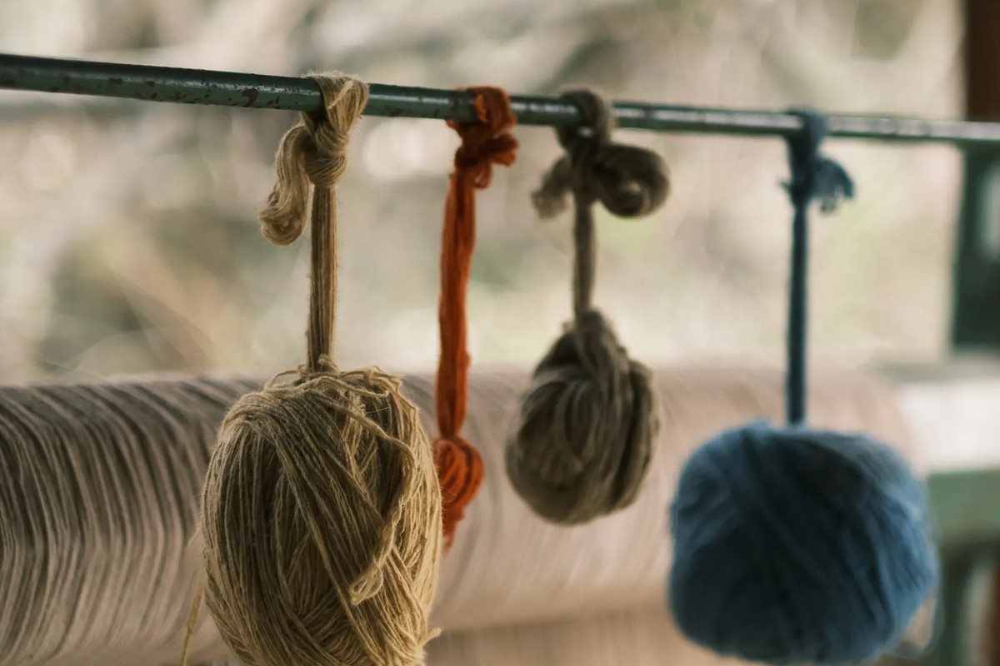

Knowledge • Technical FAQ
Sockcraft & Fiber Inquiries
Comprehensive guidance on our high-tensile knitting techniques, merino fleece performance, and recommended sock laundering care.

Lanolin Hydrophobic Shield
The Natural Science of Dry Mountain Feet
Merino wool possesses an extraordinary microscopic cuticle structure that is naturally hydrophobic on the outside while being hydrophilic within the fiber cortex. This means dew, mist, and splash droplets bead directly off the surface, while perspiration is drawn away from skin into the fiber core.
Even when fully saturated with 30% of its dry weight in moisture, pure merino wool generates a minute amount of sorption heat, keeping your feet warm and preventing the blister-inducing clamminess associated with wet cotton or nylon.
Technical Answers
Frequently Asked Questions
Turn your socks inside out prior to washing to allow detergent to cleanse skin oils from the interior terry loops. Wash on gentle cycle with cool or lukewarm water using a pH-neutral wool detergent. Avoid chlorine bleach or fabric softeners, as they coat the wool scales and degrade breathability. Air dry flat or hang over a line.
Prickle sensation is caused by coarse wool fibers exceeding 28 microns that fail to bend when contacting human nerve endings. Anklet Badger exclusively spins superfine 18.5-micron merino wool fibers that flex softly against the skin, delivering luxurious silk-like comfort without cutaneous irritation.
We twist four continuous filaments of textured industrial nylon into the wool roving solely at the heel cup and forefoot strike zone. This creates an armored composite matrix where wool provides shock cushion while the nylon strands absorb the friction shearing against interior boot leather.
Yes. High-altitude merino fleece contains natural keratin proteins and trace lanolin that inhibit bacterial proliferation and odor buildup. Our testers regularly wear a single pair of Ridge Trail Anklets for three to five consecutive mountain hiking days with complete odor freshness.
Our 200-needle cylinders produce an anatomic knit with high elastic recovery. If you fall between sizes, we recommend sizing down for running shoes or snug trail runners to maintain a zero-slip athletic contour, or sizing up if wearing heavy insulated mountaineering boots.
Yes. We provide custom needle density, height profiles, and guild monogramming for commercial mountain guide services and search-and-rescue organizations. Contact our Denver consultation desk to schedule a technical outfitting review.